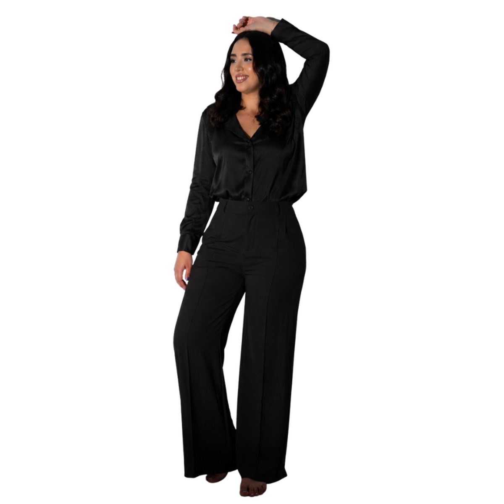

Isadora Rezende
Me chamo Isadora, tenho 2 anos de experiência na área de social media, gestão de redes sociais, videomaker e storymaker. Busco sempre registrar momentos únicos com agilidade, qualidade e estratégia.
O que eu faço?
Produzo conteúdos para redes sociais, incluindo reels, posts, stories, trends, vídeos para eventos e registros em tempo real, sempre em alta qualidade.
Meu diferencial
Mais do que postar, eu crio o roteiro do dia de acordo com as expectativas do cliente, escolhendo músicas, cores e elementos exclusivos para cada projeto.